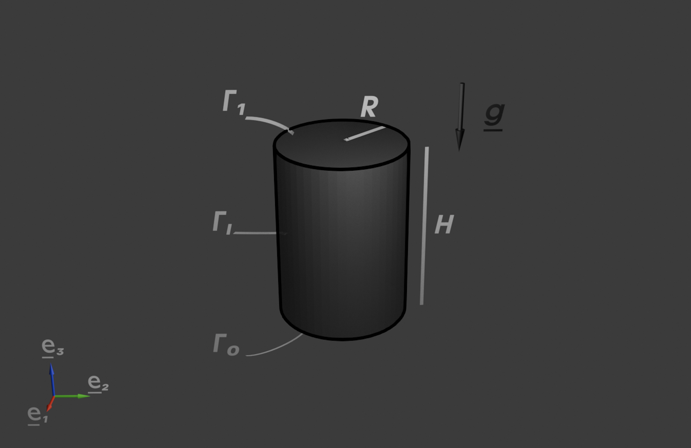

I. Cylindre sous son poids propre#
1. Résolution de problèmes d’élastostatique linéarisés : l’approche en contrainte#
Dans cet exercice, nous étudions le comportement mécanique d’un cylindre soumis à son propre poids.
Dimensions et orientations : Le cylindre a une hauteur \(H\) selon la direction \(\boldsymbol{e}_3\) et un rayon \(R\) pour sa section droite circulaire.
Surfaces principales (voir figure 1.1 ci-dessous):
\(\Gamma_0\) désigne la base inférieure du cylindre située dans le plan \(x_3 = 0\).
\(\Gamma_1\) désigne la base supérieure du cylindre située dans le plan \(x_3 = H\).
\(\Gamma_l\) représente la surface latérale du cylindre.
Point de référence : Le point \(O\) est le centre de la base \(\Gamma_0\).
 Figure 1.1 : Représentation du cylindre avec ses surfaces principales.
Le cylindre est élastique, homogène et isotrope, caractérisé par un module de Young \(E\) et un coefficient de Poisson \(\nu\). Il est supposé pesant, avec une masse volumique \(\rho\). La base \(\Gamma_0\) est encastrée, tandis que les surfaces \(\Gamma_1\) (base supérieure) et \(\Gamma_l\) (surface latérale) sont supposées libres d’efforts.
a. Traduire l’équilibre de la pièce et en déduire la résultante et le moment au point \(O\) du tenseur des efforts surfaciques exercés sur cette base.
Montrer que ce torseur est équivalent à une distribution d’efforts surfaciques uniforme de la forme \(\boldsymbol{F}_s = P\boldsymbol{e}_3 \), où \(P\) étant un scalaire constant que l’on exprimera en fonction des données du problème.
1.1 Traduisons l’équilibre :#
À partir des lois de l’équilibre, nous pouvons écrire les relations suivantes :
\(\mathbf{R}^*\) : résultante de la force poids
\(\mathbf{M}_O^*\) : moment résultant de la force poids en \(O\)
À l’équilibre, la résultante de la force poids \(\mathbf{R}^*\) est égale aux actions extérieures mécaniques surfaciques appliquées sur la base \(\Gamma_0\). Ces actions s’expriment à travers le vecteur contrainte de Cauchy :
1.2 Calcul des efforts#
Nous cherchons maintenant à déterminer la résultante \(\mathbf{R}\) et le moment \(\mathbf{M}_O\) des forces gravitaires agissant sur le cylindre.
1.2.1 Résultante des forces#
La résultante des forces \(\mathbf{R}\) représente la somme vectorielle de toutes les forces de gravité agissant sur le cylindre. Nous la calculons à partir de son expression intégrale volumique :
Passons en coordonnées cylindriques pour effectuer les intégrations :
En séparant les intégrales, nous obtenons :
Ainsi, la résultante des forces gravitaires est donnée par :
1.2.2 Moment au point \(O\)#
Le moment \(\mathbf{M}_O\) représente l’effet de rotation des forces gravitaires autour du point \(O\). Il s’exprime comme suit :
La position \(\mathbf{OM}\) dans les coordonnées cylindriques est donnée par \(\mathbf{OM} = r \mathbf{e}_r + z \mathbf{e}_3\). En insérant cette expression et en utilisant \(\mathbf{e}_r \wedge \mathbf{e}_3 = -\mathbf{e}_\theta\) et \(\mathbf{e}_3 \wedge \mathbf{e}_3 = \mathbf{0}\), nous obtenons :
Or, \(\mathbf{e}_\theta = -\sin\theta \mathbf{e}_1 + \cos\theta \mathbf{e}_2\).
Les contributions intégrées sur \(\theta \in [0, 2\pi]\) s’annulent par symétrie, ce qui donne :
1.2.3 Force surfacique sur \(\Gamma_0\)#
La force surfacique uniforme sur la base \(\Gamma_0\) s’écrit :
En intégrant sur \(\Gamma_0\) (aire \(S = \pi R^2\)), la résultante est donnée par :
Substituons \(\mathbf{R} = \pi \rho g H R^2 \mathbf{e}_3\) et simplifions :
Ainsi, le torseur est équivalent à une distribution uniforme \(\mathbf{F}_s = P \mathbf{e}_3\) où \(P = \rho g H\).
Pour construire une solution analytique du problème, nous considérons à partir de maintenant le problème d’équilibre obtenu en >remplaçant la condition d’encastrement sur \(\Gamma_0\) par une condition aux limites en efforts.
La base \(\Gamma_0\) est désormais supposée soumise à une densité surfacique d’efforts uniforme :\[ \mathbf{F}_s = P \boldsymbol{e}_3, \]déterminée dans la question précédente.
Écrire les équations du problème et les nouvelles conditions aux limites associées.
Vérifier si ce problème est régulier. Si oui, préciser de quel type.
Définir les espaces des champs admissibles cinématiquement, \({U}_{ad}\), et statiquement, \(\Sigma_{ad}\), pour ce problème.
2. Équations du problème d’élastostatique avec chargement (poids propre + force surfacique sur \(\Gamma_0\))#
2.1 Équilibre local#
Dans le domaine \(\Omega\), l’équation d’équilibre local est donnée par :
où la force volumique \(\mathbf{F}_v\) représente l’effet de la gravité \(\mathbf{g}\), donnée par \(\mathbf{F}_v = -g \mathbf{e}_3\). Ainsi, l’équation s’écrit :
2.2 Loi de comportement#
La loi de comportement élastique linéaire est donnée par la relation entre le tenseur des contraintes \(\boldsymbol{\sigma}\) et le tenseur des déformations \(\boldsymbol{\varepsilon}\) :
où :
\(\lambda\) et \(\mu\) sont les coefficients de Lamé, définis par :
\[ \mu = \frac{E}{2(1+\nu)}, \quad \lambda = \frac{E\nu}{(1+\nu)(1-2\nu)}, \]avec \(E\) le module de Young et \(\nu\) le coefficient de Poisson.
Le tenseur des déformations \(\boldsymbol{\varepsilon}\) est exprimé en fonction du déplacement \(\mathbf{u}\) comme :
2.3 Conditions aux limites#
Sur la base \(\Gamma_0\) (pour \(x_3 = 0\))
La base est soumise à une force surfacique uniforme \(\mathbf{F}_s\) donnée par \(\mathbf{F}_s = P \mathbf{e}_3\). En mécanique des milieux continus, le vecteur force surfacique est défini par le vecteur contrainte de Cauchy \(\mathbf{T}\), qui s’exprime comme :
\[ \mathbf{T}|_{\Gamma_0} = \boldsymbol{\sigma}|_{\Gamma_0} \cdot \mathbf{n}, \]où \(\mathbf{n}\) est la normale unitaire à \(\Gamma_0\). Sur la base \(\Gamma_0\), on a \(\mathbf{n} = -\mathbf{e}_3\), ce qui donne :
\[ \mathbf{T}|_{\Gamma_0} = \boldsymbol{\sigma}|_{\Gamma_0} \cdot (-\mathbf{e}_3) = P \mathbf{e}_3. \]En contractant avec \(\mathbf{e}_3\), on obtient finalement :
\[ \mathbf{T}|_{\Gamma_0} \cdot \mathbf{e}_3 = -P. \]Sur la base supérieure \(\Gamma_1\) (pour \(x_3 = H\))
La base supérieure est libre d’efforts :
\[ \boldsymbol{\sigma}|_{\Gamma_1} \cdot \mathbf{n} = \mathbf{0}, \quad \text{avec } \mathbf{n} = \mathbf{e}_3. \]Sur la surface latérale \(\Gamma_l\) (pour \(r = R\))
La surface latérale est libre d’efforts :
\[ \boldsymbol{\sigma}|_{\Gamma_l} \cdot \mathbf{n} = \mathbf{0}, \quad \text{avec } \mathbf{n} = \mathbf{e}_r. \]
2.4 Étude de la régularité et des espaces admissibles#
2.4.1 Régularité du problème#
Dans ce problème, nous cherchons le couple solution \((\boldsymbol{\sigma}, \mathbf{u})\) tel que ce problème soit bien posé.
Le problème est-il régulier ? Oui.
Il est de type 2, car on connaît en tout point de la frontière les données scalaires du vecteur contrainte.
2.4.2 Définition des espaces admissibles**#
a. Espaces cinématiquement admissible
L’espace des champs admissibles cinématiquement est défini par :
Dans ce problème, il n’y a pas de condition limite en déplacement spécifique (propre à un problème de type 2).
b. Espaces statiquement admissible
L’espace des champs admissibles statiquement est défini par :
On se propose de rechercher la solution en contrainte de ce nouveau problème sous la forme :
\[\boldsymbol{\sigma}(x_1, x_2, x_3) = \sigma_{33}(x_1, x_2, x_3) \boldsymbol{e}_3 \otimes \boldsymbol{e_3}.\]
À quelle(s) condition(s) un tel champ est-il statiquement admissible pour ce problème ?
3. Recherche de la solution en contrainte#
Nous recherchons une solution en contrainte sous la forme :
Approche en contrainte
Choix d’un champ admissible :
On choisit \(\boldsymbol{\sigma} \in \Sigma_{ad}\).Calcul du tenseur des déformations \(\boldsymbol{\varepsilon}\) :
Le tenseur \(\boldsymbol{\varepsilon}\) est calculé à partir de la loi de comportement (relation entre \(\boldsymbol{\sigma}\) et \(\boldsymbol{\varepsilon}\)).Calcul du champ de déplacement \(\mathbf{u}\) :
Le champ \(\mathbf{u}\) est obtenu par intégration du tenseur \(\boldsymbol{\varepsilon}\), tout en vérifiant les équations de compatibilité.
Remarque : Si les conditions aux limites sur les déplacements ne sont pas satisfaites, il peut être nécessaire de modifier \(\mathbf{u}\) ou de vérifier les contraintes supplémentaires sur \(\Sigma_{ad}\).
3.1. Résolution du problème d’élastostatique : Calcul de \(\boldsymbol{\sigma}_{33}\)#
3.1.1 Équation de divergence#
En utilisant l’expression simplifiée du tenseur des contraintes \(\boldsymbol{\sigma}\), nous avons :
et la condition d’équilibre local \(\mathrm{div} \, \boldsymbol{\sigma} = \rho g \mathbf{e}_3\) donne :
Ainsi :
En intégrant, on obtient :
où \(f(x_1, x_2)\) est une fonction à déterminer.
3.1.2 Conditions aux limites#
Sur la base \(\Gamma_1\) (pour \(x_3 = H\)), la base supérieure est libre d’efforts, donc :
Cela implique :
En remplaçant \(x_3 = H\) dans l’expression de \(\sigma_{33}\) :
3.1.3 Expression finale de \(\sigma_{33}\)#
En regroupant les résultats, \(\sigma_{33}\) s’écrit finalement :
où \(x_3 \in [0, H]\).
3.2 Vérifications#
3.2.1 Condition sur \(\Gamma_1\) (pour \(x_3 = H\))#
3.2.2 Condition sur \(\Gamma_0\) (pour \(x_3 = 0\))#
3.2.3 Condition sur \(\Gamma_l\) (surface latérale)#
Sur \(\Gamma_l\), la normale est \(\mathbf{n} = \mathbf{e}_r = \cos \theta \, \mathbf{e}_1 + \sin \theta \, \mathbf{e}_2\).
3.3 Conclusion#
L’expression \(\sigma_{33} = \rho g (x_3 - H)\) respecte toutes les conditions aux limites du problème.
Déterminer le champ de déformations associé à ce champ de contraintes.
Existe-t-il un champ de déplacement qui en dérive ?
4. Calcul de \(\boldsymbol{\varepsilon}\) et vérification de la compatibilité#
4.1 Expression de \(\boldsymbol{\varepsilon}\)#
La loi de comportement donne le tenseur des déformations \(\boldsymbol{\varepsilon}\) en fonction de \(\boldsymbol{\sigma}\) comme suit :
où \(\mathbf{1}\) est le tenseur identité, \(\nu\) le coefficient de Poisson, et \(E\) le module de Young.
En remplaçant le tenseur des contraintes \(\boldsymbol{\sigma}\) :
on obtient :
Donc, le tenseur \(\boldsymbol{\varepsilon}\) devient :
En simplifiant :
4.2 Expression finale de \(\boldsymbol{\varepsilon}\) en fonction de \(x_3\)#
En remplaçant \(\sigma_{33} = \rho g (x_3 - H)\) dans l’expression de \(\boldsymbol{\varepsilon}\), on obtient :
4.3 Vérification des équations de compatibilité#
Pour le champ de déformations \(\boldsymbol{\varepsilon}\), seules les composantes diagonales (\(\varepsilon_{11}\), \(\varepsilon_{22}\), \(\varepsilon_{33}\)) sont non nulles. Vérifions les équations de compatibilité pour ces composantes :
Pour \(\varepsilon_{33,33}\) :
L’équation de compatibilité devient :
\( \varepsilon_{33,33} + \varepsilon_{33,33} = \varepsilon_{33,33} + \varepsilon_{33,33} \).
Cette égalité est triviale et toujours vérifiée.Pour \(\varepsilon_{11,33}\) et \(\varepsilon_{22,33}\) :
Les composantes \(\varepsilon_{11}\) et \(\varepsilon_{22}\) dépendent linéairement de \(x_3\), donc leurs dérivées secondes sont nulles :
\( \varepsilon_{11,33} = 0 \quad \text{et} \quad \varepsilon_{22,33} = 0 \).
Ces égalités satisfont l’équation de compatibilité.Pour les autres composantes comme \(\varepsilon_{33,22}\), \(\varepsilon_{33,11}\), \(\varepsilon_{11,22}\), \(\varepsilon_{11,11}\) et \(\varepsilon_{22,22}\) :
Puisque \(\boldsymbol{\varepsilon}\) dépend uniquement de \(x_3\) comme variable, toutes ces dérivées mixtes ou de second ordre dans \(x_1\) et \(x_2\) sont nulles. Ces composantes n’apportent donc aucune contrainte supplémentaire à vérifier.
4.4 Conclusion#
Les équations de compatibilité sont toutes satisfaites pour le champ de déformations \(\boldsymbol{\varepsilon}\) proposé. Cela implique que ce champ de déformations est géométriquement cohérent, c’est-à-dire qu’il peut être associé à un champ de déplacement \(\mathbf{u}\) continu et régulier dans l’ensemble du domaine.
Ce résultat garantit que la solution obtenue pour \(\boldsymbol{\varepsilon}\) respecte les lois géométriques de la mécanique des milieux continus. Autrement dit, il n’y a pas d’incohérences ou de distorsions impossibles dans le matériau, et le champ \(\mathbf{u}\) est réalisable (il correspond bien à une déformation physique possible).
Calculer le champ de déplacement associé s’il existe.
Le problème résolu admet-il un couple \((\sigma, u)\) solution unique ? Commenter par rapport au problème initial.
5. Intégration de \(\boldsymbol{\varepsilon}\) pour trouver \(\mathbf{u}\)#
Le tenseur des déformations \(\boldsymbol{\varepsilon}\) est diagonal et donné par :
avec :
\(\varepsilon_{11} = \varepsilon_{22} = -\frac{\nu}{E} \rho g (x_3 - H)\),
\(\varepsilon_{33} = \frac{1}{E} \rho g (x_3 - H)\).
5.1 Relations entre les déformations et les déplacements#
Les relations entre le tenseur des déformations \(\boldsymbol{\varepsilon}\) et le champ de déplacement \(\mathbf{u} = (u_1, u_2, u_3)\) sont :
\(\varepsilon_{11} = \frac{\partial u_1}{\partial x_1}\),
\(\varepsilon_{22} = \frac{\partial u_2}{\partial x_2}\),
\(\varepsilon_{33} = \frac{\partial u_3}{\partial x_3}\),
\(\varepsilon_{12} = \frac{1}{2} \left( \frac{\partial u_1}{\partial x_2} + \frac{\partial u_2}{\partial x_1} \right) = 0\),
\(\varepsilon_{13} = \frac{1}{2} \left( \frac{\partial u_1}{\partial x_3} + \frac{\partial u_3}{\partial x_1} \right) = 0\),
\(\varepsilon_{23} = \frac{1}{2} \left( \frac{\partial u_2}{\partial x_3} + \frac{\partial u_3}{\partial x_2} \right) = 0\).
Les composantes hors diagonale du tenseur des déformations étant nulles (\(\varepsilon_{12} = \varepsilon_{13} = \varepsilon_{23} = 0\)), nous concluons que :
5.1.1 Intégration des équations#
Pour \(\varepsilon_{11}\) :
\[ \varepsilon_{11} = \frac{\partial u_1}{\partial x_1} = -\frac{\nu}{E} \rho g (x_3 - H). \]Par intégration par rapport à \(x_1\), on obtient :
\[ u_1 = -\frac{\nu}{E} \rho g (x_3 - H) x_1 + f_1(x_2, x_3). \]Pour \(\varepsilon_{22}\) :
\[ \varepsilon_{22} = \frac{\partial u_2}{\partial x_2} = -\frac{\nu}{E} \rho g (x_3 - H). \]Par intégration par rapport à \(x_2\), on obtient :
\[ u_2 = -\frac{\nu}{E} \rho g (x_3 - H) x_2 + f_2(x_1, x_3). \]Pour \(\varepsilon_{33}\) :
\[ \varepsilon_{33} = \frac{\partial u_3}{\partial x_3} = \frac{1}{E} \rho g (x_3 - H). \]Par intégration par rapport à \(x_3\), on obtient :
\[ u_3 = \frac{1}{E} \rho g \frac{(x_3 - H)^2}{2} + f_3(x_1, x_2). \]
5.1.2 Expressions finales du champ de déplacement#
En regroupant les résultats, le champ de déplacement s’écrit :
5.1.3 Exploitation de (1’), (2’), (3’) dans (4), (5), (6)#
(4’) :
\[ f_1(x_2, x_3)_{,2} + f_2(x_1, x_3)_{,1} = 0. \](5’) :
\[ f_1(x_2, x_3)_{,3} -\frac{\nu \rho g}{E}x_1 + f_3(x_1, x_2)_{,1} = 0. \](6’) :
\[ f_2(x_1, x_3)_{,3}-\frac{\nu \rho g}{E}x_2 + f_3(x_1, x_2)_{,2} = 0. \]
5.2 Calcul du champ de déplacement#
Le champ de déplacement \(\mathbf{u}\) a été calculé et décomposé en trois parties :
Déformation mécanique,
Rotation de corps rigide, et
Translation de corps rigide.
Ce champ satisfait à la fois les équations de compatibilité et les conditions aux limites imposées, prouvant qu’il est admissible et géométriquement cohérent.
5.3 Unicité de la solution \((\boldsymbol{\sigma}, \mathbf{u})\)#
Dans le problème initial (encastrement sur \(\Gamma_0\)) :
La condition d’encastrement sur \(\Gamma_0\) imposait que les déplacements soient nuls :
\[ \mathbf{u} = 0 \quad \text{sur } \Gamma_0, \]éliminant toute contribution de rotation ou translation de corps rigide.
Ainsi, pour le problème initial, la solution \((\boldsymbol{\sigma}, \mathbf{u})\) est unique.
Dans le problème modifié (chargement en efforts sur \(\Gamma_0\)) :
En remplaçant la condition d’encastrement par un chargement en efforts uniformes, cette modification assouplit les contraintes sur les déplacements, ouvrant la porte à des solutions non uniques pour \(\mathbf{u}\).
Nous introduisons des degrés de liberté supplémentaires associés à la rotation et à la translation. Ces mouvements rigides ne sont pas contraints par les équations d’équilibre ni les conditions aux limites en efforts, rendant la solution \((\boldsymbol{\sigma}, \mathbf{u})\) non unique.
Cela se manifeste par la présence des constantes :
\[ a, \, b, \, f, \, d, \, h, \, n, \]qui restent indéterminées.
Commentaire sur l’unicité et les implications :
Problème initial (encastrement) :
La solution est unique, car l’encastrement élimine toute possibilité de mouvement rigide.
Problème modifié (chargement en efforts) :
La solution n’est pas unique, car les conditions aux limites en efforts permettent des mouvements rigides non contraints.
5.3.1 Équations dérivées de (4’), (5’), (6’)#
(4’’) :
(5’’) :
(6’’) :
5.3.2 Exploitation de (4’’), (5’’), (6’’)#
En intégrant les équations (4’’) et (5’’), on obtient :
Pour \(f_1(x_2, x_3)\) :
\[ f_1(x_2, x_3) = ax_2 + bx_3 + c x_2 x_3 + d. \tag{7} \]Pour \(f_2(x_1, x_3)\) :
\[ f_2(x_1, x_3) = ex_1 + fx_3 + g x_1 x_3 + h. \tag{8} \]Pour \(f_3(x_1, x_2)\) :
\[ f_3(x_1, x_2) = \frac{\nu \rho g}{E} \frac{x_1^2 + x_2^2}{2} + i x_1 + l x_2 + m x_1 x_2 + n. \tag{9} \]
5.3.3 Injection dans (4’), (5’), (6’) de (7), (8) et (9)#
Dans (4’):
ce qui donne :
soit :
Dans (5’) :
Ainsi :
Dans (6’) :
Ainsi :
5.3.4 Intégration finale pour \(\mathbf{u}\)#
\(u_1 = \color{rgb(127,0,127)}{-\frac{\nu \rho g}{E} (x_3 - H) x_1} + \color{rgb(0,127,0)}{a x_2} + \color{rgb(127,127,0)}{b x_3 + d}.\)
\(u_2 = \color{rgb(127,0,127)}{-\frac{\nu \rho g}{E}(x_3-H)x_2}+\color{rgb(0,127,0)}{-ax_1}+\color{rgb(127,127,0)}{fx_3+h}\)
\(u_3 = \color{rgb(127,0,127)}{\frac{\rho g}{E}\left(\frac{x_3^2}{2}-Hx_3\right)+\frac{\nu \rho g}{E}\frac{x_1^2+x_2^2}{2}}+\color{rgb(0,127,0)}{-bx_1-fx_2}+\color{rgb(127,127,0)}{n}.\)
Explications des couleurs:
\(\textcolor{rgb(127,0,127)}{\text{Partie liée à la déformation mécanique (effet des contraintes internes)}}\).
\(\textcolor{rgb(0,127,0)}{\text{Partie liée à la rotation de corps rigide}}\).
\(\textcolor{rgb(127,127,0)}{\text{Partie liée à la translation de corps rigide}}\).
Déterminer le déplacement du point \(O'\), centre de la face \(\Gamma_1\), ainsi que la déformée de cette surface.
6. Déplacement du point \(M_0\) sur \(\Gamma_1\)#
Le point \(M_0\) appartient à la surface \(\Gamma_1\), caractérisée par \((r, \theta, x_3 = H)\) en coordonnées cylindriques. Sa position initiale est donnée par :
Après déformation, sa position devient :
où \(\mathbf{u}(M_0)\) est le déplacement évalué sur \(\Gamma_1\) (\(x_3 = H\)).
6.1 Calcul du déplacement \(\mathbf{u}\) sur \(\Gamma_1\)#
En utilisant le champ de déplacement \(\mathbf{u}\) calculé précédemment :
Composante selon \(\mathbf{e}_r\) (\(u_r\)) : La composante radiale est obtenue en coordonnées cylindriques. À \(x_3 = H\), seule la déformation mécanique contribue :
\[ u_r = 0. \]Composante selon \(\mathbf{e}_\theta\) (\(u_\theta\)) : Par symétrie du problème, il n’y a pas de dépendance angulaire (\(\theta\)), donc :
\[u_\theta = 0.\]Composante selon \(\mathbf{e}_3\) (\(u_z\)) : La composante verticale est obtenue en évaluant \(u_3\) sur \(\Gamma_1\) (\(x_3 = H\)) :
\[u_z = \frac{\nu \rho g}{E} \frac{r^2}{2} - \frac{\rho g}{2E} H^2.\]
6.2 Position après déformation#
En combinant, la position du point \(M_0\) après déformation devient :
Ou, explicitement :
6.3 Déformée de la surface \(\Gamma_1\)#
La déformée de la surface \(\Gamma_1\) montre que :
La position radiale (\(r \mathbf{e}_r\)) reste inchangée, confirmant l’absence de déformation radiale.
La position verticale (\(\mathbf{e}_3\)) subit un déplacement composé de :
Un terme quadratique en \(r^2\), lié à la déformation mécanique.
Un terme constant en \(H^2\), lié à l’effet global de la charge gravitaire.
La surface reste symétrique par rapport à l’axe \(x_3\) mais présente une courbure parabolique en raison de la dépendance en \(r^2\).
6.4 Conclusion#
Déplacement du centre \(O'\) de \(\Gamma_1\) : En posant \(r = 0\), on retrouve :
\[\mathbf{OM}' = H \mathbf{e}_3 - \frac{\rho g}{2E} H^2 \mathbf{e}_3.\]Le point \(O'\) subit donc un déplacement vertical de :
\[u_z(O') = -\frac{\rho g}{2E} H^2.\]Déplacement général sur \(\Gamma_1\) : La déformée de la surface \(\Gamma_1\) est donnée par :
\[u_z(r) = \frac{\nu \rho g}{E} \frac{r^2}{2} - \frac{\rho g}{2E} H^2.\]
La déformation est caractérisée par une courbure parabolique dans la direction verticale (\(\mathbf{e}_3\)). Elle prend la forme d’un paraboloïde de révolution orienté selon l’axe \(\mathbf{e}_3\). Le sommet de ce paraboloïde est légèrement abaissé en raison du poids propre, ce qui est exprimé par le terme \(-\frac{\rho g H^2}{2E}\). La courbure de la surface dépend des paramètres mécaniques du matériau, notamment le coefficient de Poisson (\(\nu\)), la masse volumique (\(\rho\)) et le module de Young (\(E\)).
Calculer numériquement le déplacement \(u_z(O')\), au centre de \(\Gamma_1\), pour ces dimensions et propriétés mécaniques. Comparer ce résultat à celui obtenu à l’aide d’une simulation par éléments finis 3D. Interpréter les écarts éventuels.
7. Applications numériques#
Rayon \(R = 0.1 \, \text{m}\)
Hauteur \(H = 0.5 \, \text{m}\)
Module de Young \(E = 210 \, \text{GPa}\)
Coefficient de Poisson \(\nu = 0.3\)
Masse volumique \(\rho = 7850 \, \text{kg/m}^3\)